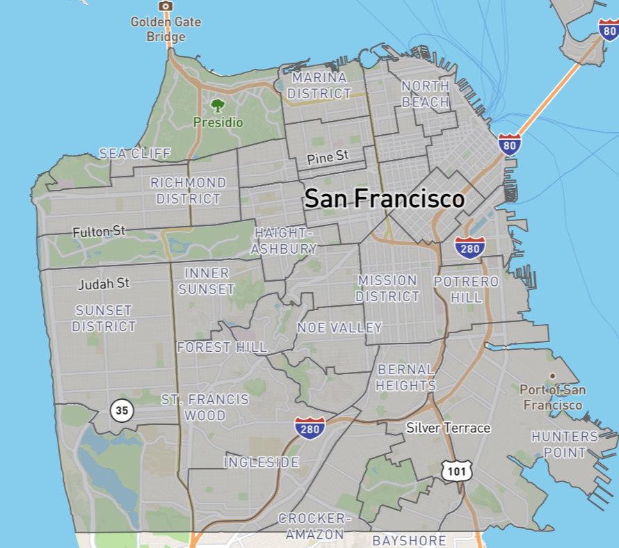
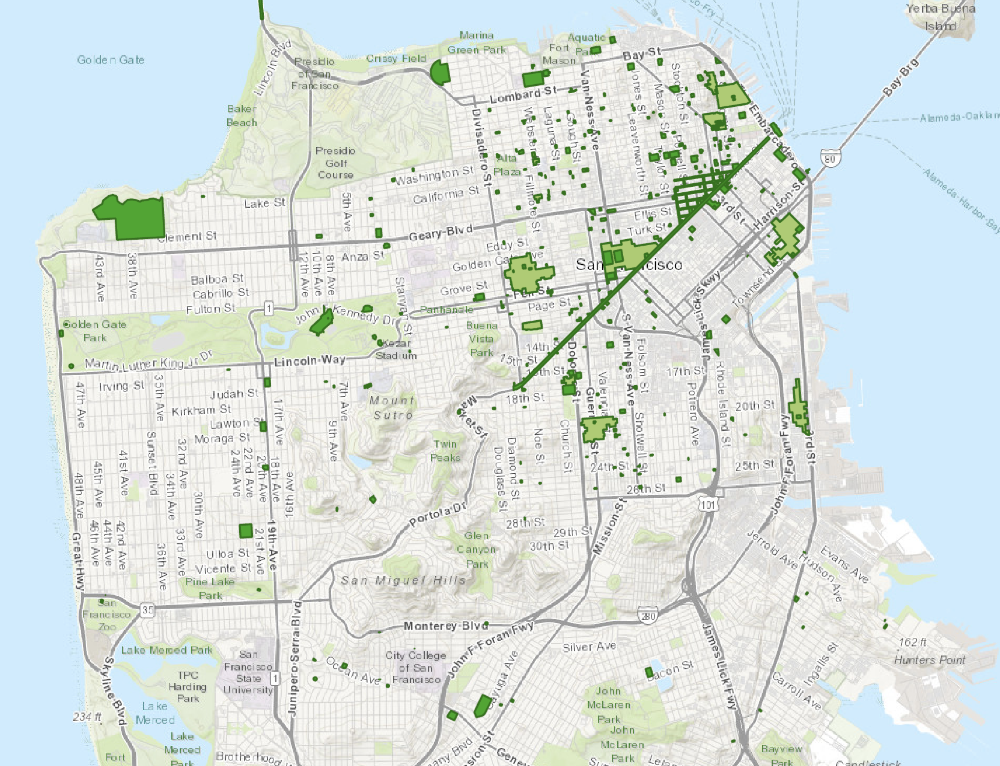

San Francisco is not only a tourist city, but also an popular filming location for many movies and television productions. Filming locations in the city are not randomly distributed. Some neighborhoods, landmarks, and areas appear more frequently in screen productions than others. This project uses the “Film Locations in San Francisco” dataset to explore how film-location records change across years, neighborhoods, and production attributes. For example, it looks at which years have more location records, which production companies or directors appear more often, and which neighborhoods are more commonly used as filming locations.
The dataset includes basic information about each film record, such as the movie title, release year, filming location, people and companies involved, and map coordinates. With this information, we can explore not only when filming happened, but also where it happened and which parts of San Francisco appeared most often on screen.
Figure 1 shows how San Francisco film-location records change over time and connects those yearly patterns with major production attributes. The line chart shows the number of film-location records by release year. After a year is selected, the bar charts show the most common production companies, directors, or distributors connected to records from that year.
How to interact with Figure 1:
Figure 2 focuses on the location side of the dataset. While Figure 1 shows changes by year and production attribute, this view shows how film-location records are distributed across San Francisco neighborhoods and decades. The bar chart gives a quick comparison of record counts, while the map connects the selected neighborhood and decade to real places in the city.
How to Use Figure 2:

*Contextual Viz1
DataSF — Analysis Neighborhoods
This map shows how San Francisco is divided into neighborhoods. It gives background for Figure 2 because the film-location dataset also uses neighborhood names to group records. This map helps connect the neighborhood categories in the dataset with actual areas of the city.

*Contextual Viz2
San Francisco Planning — Historic Landmarks Map
This map shows San Francisco landmarks and landmark districts. It adds cultural and historical context to the film-location data because many filming locations are also recognizable city spaces. This background helps explain why some areas may appear more often in film-location records.
The visualizations show that San Francisco’s film-location records are not evenly spread across time or across the city. In the yearly trend, film-location records rise over the long term and reach a high point around 2015. After 2020, the number of records drops sharply, which may be related to the disruption caused by COVID-19 and the difficulty of filming on location during that period. After 2023, the records begin to show signs of recovery.
The neighborhood view adds another layer to this story. Some neighborhoods appear much more often than others, so filming activity is not simply spread evenly across San Francisco. Many records are located near recognizable buildings, landmarks, waterfront areas, downtown spaces, or transportation locations. These places may be easier to recognize on screen, easier to use for certain scenes, or more useful for building a strong visual image of the city.
The production-attribute view also shows that the dataset includes different kinds of organizations connected to film-location records. Some names may not look like traditional film studios and could be related to production support, distribution, or other contracted roles. Because of this, the project does not only show movie titles and locations, but also includes some background about the companies and people connected to the records.